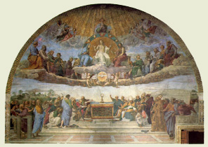

|  |
|---|
[88280] Richardus de Wedinghausen, Expositio Missae In virtute sanctae crucis, et sacramenti altaris magna est convenientia et magna efficacia, cum per utrumque excludantur contraria, et renovetur et sanctificetur Ecclesia. Duplici autem ratione renovamur; ut scilicet prius exuamur a vetustate, deinde induamur novitate. Septem sunt quae in sacramento altaris attenduntur universaliter: scilicet quae sit causa Missae, quae differentia, quis finis, quae virtus, quis ordo, quae ratio, et quae utilitas. Causa Missae est tripartita, scilicet honor sanctorum, salus vivorum, et requies defunctorum. Praemittitur autem quasi prologus oratio et invocatio Trinitatis, in quo praelibatur et ostenditur quae sit causa Missae sequentis: suscipe sancta Trinitas et cetera. Ibi continetur, ut sanctis proficiat ad honorem, nobis autem ad salutem, defunctis ad requiem. Tripartita est ergo differentia: nam secundum differentiam partium Ecclesiae tres sunt Missarum differentiae: ut scilicet alia dicatur pro sanctis, alia pro vivis, alia pro defunctis fidelibus. Sunt enim tres partes Ecclesiae: scilicet pars in exultatione, pars in peregrinatione, et pars in expectatione. In exultatione sunt sancti qui Christi vestigia sunt secuti: in peregrinatione sunt vivi, subjacentes varietati et tribulationi: in expectatione sunt fideles defuncti, qui expectant opem et requiem. Secundum harum trium partium differentiam sunt tres differentiae finium Missarum et officiorum: alium enim finem habet Missa pro sanctis, quia ite, Missa est; alium finem Missa pro vivis, quia benedicamus domino; et alium finem Missa pro defunctis, quia requiescant in pace. In fine Missae pro sanctis invitamur ad illam gloriam in qua sancti jam requiescunt, per ite, Missa est, quasi dicat: hostia a patre nobis missa est, vel a nobis ad patrem remissa est, ideo festinate ingredi ad illam requiem. Finis vero Missae pro vivis hortatur nos qui sumus in hac peregrinatione, ut demus jugiter Deo benedictionem et gloriam, juxta illud Ps. 113: nos qui vivimus, benedicimus domino et cetera. In fine Missae pro defunctis, eis optamus requiem per requiescant in pace, quod in principio petimus similiter per requiem aeternam et cetera. Crux Christi est, quae sacramentum est altaris, et quae sacramentum Ecclesiae consecrat et sanctificat. Et nota quod septem ordines crucis in serie canonis sunt, quos spiritus sanctus multa sapientia ordinavit. Primus ordo, a te igitur clementissime pater, usque ad qui pridie: et tertius est a qui pridie usque ad unde et memores: quartus est ab unde et memores, usque ad per quem haec omnia: quintus est a per quem haec omnia, usque ad per ipsum. Sextus est a per ipsum, usque ad pax domini: septimus est a pax domini, usque ad finem Missae. In singulis autem ordinibus sunt causae profundae, et rationes, quae rationabiles movent quaestiones quas spiritus cui vult aperit. In primo ordine canonis tria apponimus, et pro tribus rogamus Deum, et tria petimus: et ideo tres cruces facimus. Tria apponimus, idest panem, vinum et aquam. Quare autem ista tria potiusquam alia apponuntur, quaestio oritur. Tripartita vero causa. Prima causa, quia inter omnia humanae vitae sustentandae necessaria, praecipua sunt panis, vinum et aqua, et magis communia, et utiliora, et magis necessaria: propterea potius debuerunt apponi quam alia, et in illud quod melius et utilius est omnibus et super omnia ad vitam capessendam magis necessarium transformari, idest in corpus et sanguinem Christi. Secunda causa est, quia in his res ipsa et virtus sacramenti intelligitur, sine qua ad hoc sacramentum indigne acceditur, et ad judicium non ad salutem sumitur: in aqua enim intelligitur fides quae latet, et nutritur in aquis; in vino, quod laetificat et accendit, intelligitur spes; in pane, qui confirmat et reficit, intelligitur caritas. Vel in pane qui corroborat, intelligitur pater, qui est omnium fortitudo. In vino, quod laetificat, intelligitur filius qui est gaudium omnium nostrum, quod nemo tollet a nobis. In aqua quae mundat et lavat intelligitur spiritus sanctus. Unde Ezech. 36: effundam super vos aquam mundam, et mundabimini ab omnibus inquinamentis vestris. Vel in aqua intelligitur munditia castitatis, in pane fortitudo et opera pietatis, in vino quod accendit, rectitudo intentionis. Haec enim tria accedentibus ad altare, ita necessaria sunt, ut sine his cum salute nemo accedere possit: ideo in eminentiori loco paratur altare, ut ascensuri his gradibus studeant seipsos praeparare. Unde in quarto ordine canonis antequam dicamus, panem sanctum vitae aeternae, et calicem salutis perpetuae, pro necessario offerimus hostiam puram, hostiam sanctam, hostiam immaculatam. Sed de his in consequentibus dicendum est. Tertia causa est, quare praedicta tria apponuntur, scilicet panis, vinum et aqua: quia pro tribus generibus hominum rogamus, etiam trina nobis donari petimus. Igitur secundum hoc, tria, panem vinum et aquam ponimus: pro tribus autem rogamus. Primo simul generaliter pro omnibus, ubi dicimus, in primis quae tibi offerimus pro Ecclesia et cetera. Secundo pro familiaribus nostris absentibus, ubi dicimus, memento, domine, famulorum famularumque et cetera. Tertio pro circumstantibus, ubi dicimus, et omnium circumstantium. Tria etiam petimus: primo ut dies nostri disponantur in pace: secundo, ut eruamur ab aeterna damnatione: tertio, ut mereamur numerari in dominico grege. Quae omnia ibi habemus ubi dicimus, diesque nostros in tua pace disponas, atque ab aeterna damnatione nos eripi, et in electorum tuorum jubeas grege numerari. Quia ergo tria ponimus, tria rogamus, tria petimus, propterea tres cruces facimus, ut per virtutem crucis primo quae apposita sunt benedicantur: secundo, ut hi pro quibus apponuntur roborentur: tertio autem, ut quae petimus, impetrentur. Soluta ergo est haec quaestio, quare in hoc ordine tres cruces fiant: ut quando dicimus, haec dona, haec munera, haec sancta sacrificia illibata, scilicet majestati divinae; ut haec dona referantur ad naturam, haec munera ad gratiam, haec sancta sacrificia illibata ad incorruptionis gloriam. Quare autem hoc sacramentum iteretur, vel quomodo bene sumatur, vel quid bene sumptum operetur, vel quare sub hac specie sacramenti veritas lateat, rationabiles quaestiones oriuntur. Quare hoc sacramentum iteretur, triplex est causa. Prima est, ut qui quotidie labimur, per hoc quotidie relevemur. Secundo, ut sicut in medio Paradisi erat lignum vitae, ita sit corpus Christi assidue in medio Ecclesiae, quo criminaliter peccantes arceantur, donec per poenitentiam satisfacientes ad hoc, et per hoc reconciliati revertantur vel redeant. Tertia est, ut per hoc unum corpus efficiamur cum Christo, et mediante Christo, unum efficiamur cum Deo: unde Jo. 5: qui manducat carnem meam, et bibit meum sanguinem, in me manet, et ego in eo. Deinde bene sumitur, si quis per fidem integram, confessionem puram et poenitentiam dignam ad hoc praeparatur. Deinde sumptum tria operatur. Primo peccata purgat, secundo virtutes roborat, tertio in vitam aeternam resuscitat. Joan. 6: qui manducat meam carnem, et bibit meum sanguinem, habet vitam aeternam, et ego resuscitabo eum in novissimo die. Quare sub specie sacramenti veritas lateat vel veletur, triplex est causa. Prima est interrogatio fidei. Secunda augmentum meriti. Tertia defectus infirmi. Primo enim homo fidem interrogat, ut interrogando probet et consentiat. Secundo, ut per fidem probatam majus meritum acquirat. Tertio, ut nostrae infirmitati parcat, dum seipsum in suae majestatis claritate non manifestat, sed sub quodam velamine occultat. In primo ordine petimus ut quae apposita sunt benedicantur. In secundo vero petimus, ut quae in primo benedicta sunt, in verum et summum sacrificium transformentur. Quinque vero cruces facimus: quia quae benedicta sunt, in id transformari petimus, quod in quinque praecellit omnibus: scilicet in triplici praerogativa et caritate gemina: ideo dicimus, benedictam, omni scilicet plenitudine gratiarum, et ascriptam, summa dignitate et honore, ratam, summa et aeterna potestate. Sed quia hic triplex praerogativa parum nobis prodesset, nisi caritatem geminam exhiberet; propterea dicimus, ut nobis corpus et sanguis fiat dilectissimi filii tui domini nostri Jesu Christi: cujus caritas gemina fuit, quam habuit ad patrem et gregem, patri obediendo, et pro grege moriendo; vel caritas gemina, qua corpus et animam posuit. Aliter: vel ideo quinque cruces facimus, ut ex praedictis quinque necessaria nobis impetremus: scilicet ex participatione sanguinis remissionem peccatorum, ex participatione corporis, unitatem et societatem sanctorum, ex summa et aeterna potestate, timorem et solicitudinem mandatorum, ex summa dignitate et honore, honestatem vitae et morum, et ex plenitudine gratiarum impetremus plenitudinem praemiorum. In tertio ordine petimus, ut quae in primo et secundo benedicta sunt, in verum et summum sacrificium corporis et sanguinis Christi transformentur: et ideo duas cruces facimus. Et nota, quod iste ordo brevior est quam alius, sed profundior et magis sapientia plenus. Unde in hoc duplex quaestio movetur: prima est quare non nisi duae cruces fiant: secunda quare in hoc ordine potius quam in ceteris substantia panis et vini in verum corpus Christi et sanguinem transeat. Solutio primae quaestionis est: quia nulla alia nisi hominis natura sola duplex redimenda erat: scilicet corpus et anima. In hoc autem ordine nostra redemptio et reparatio celebratur, per quam humana natura liberatur; et ideo duplex crux fit hic propter redemptionem duplicis naturae. Solutio secundae quaestionis est: quia triplex est ordo, scilicet naturae, justitiae et gratiae. Ordine naturae flos praecedit fructum, ordine justitiae poena sequitur peccatum, ordine gratiae superabundat gratia peccatum, et misericordia impenditur, ubi nullum praecedit meritum. Et ideo nec natura potuit, nec justitia debuit, ut panis et vinum fieret corpus vel caro et sanguis; sed sola gratia divina hoc potuit et voluit, hoc fecit et facit. Sicut autem sunt tria tempora, scilicet tempus ante legem, tempus sub lege, et tempus post legem, vel tempus gratiae. Venit dominus Jesus Christus, qui hoc sacramentum celebravit et instituit, sicut et in hoc tertio ordine canonis de pane et vino, corpus et sanguinem consecrat et conficit. Et nota, quod haec tria ad hoc sacramentum sunt necessaria: scilicet ordo, actio, et intentio. Ordo, ut sit sacerdos; actio, ut verba proferat, quae Christus dixit in coena; intentio, ut ad hoc proferat: et haec tria requiruntur in aliis sacramentis, praeterquam in Baptismo qui est necessitatis quandoque vero proferuntur jocose verba pertinentia ad sacramenta, vel ad instruendum ignaros, et non habent tunc efficaciam illam vel effectum sacramenti. In quarto ordine, praesente vero et summo sacerdote, jam apud patrem innotescunt preces nostrae; praesente summa et vera hostia, jam minor praetenditur mora; trium magnalium quae fecit celebratur memoria, ut tam per eum quam per ea quae fecit patris flectatur clementia. Quinque ergo cruces facimus, non quod eum qui praesens est sanctum sanctorum sanctificemus, sed ut per ejus poenitentiam offeramus et sumamus hostiam salutarem, et eidem conformati sanctorum consortiis mereamur admitti. Dominus enim Jesus Christus in passione sua fuit hostia pura, in resurrectione fuit hostia sancta, in ascensione hostia immaculata, panis vitae aeternae esurientibus, calix salutis perpetuae justitiam facientibus. Ei ergo assimilari et conformari debemus, qui ad ipsum offerendum et sumendum accedimus. Sed quia hoc non potest fieri nisi passionem, resurrectionem et ascensionem ejus studeamus imitari, propterea trium istorum memoriam facimus, cum dicimus: unde et memores, domine, nos tui servi, sed et plebs tua sancta ejusdem Christi filii domini Dei nostri tam beatae passionis, nec non ab Inferis resurrectionis, sed et in caelos gloriosae ascensionis, ut scilicet ex imaginatione passionis per munditiam castitatis simus puri, et offeramus hostiam puram ex imitatione resurrectionis obtineamus rectitudinem intentionis, et offeramus hostiam immaculatam, ex perceptione panis sancti, vitae aeternae obtineamus virtutem et fortitudinem caritatis, et participatione calicis salutis perpetuae, obtineamus magnitudinem et aeternitatem. Tria ergo in hoc ordine sancto praecedere invenimus, quia tria praedicta necessario primum offerre debemus, ut ad panem sanctum vitae aeternae et ad calicem salutis perpetuae digne perveniamus. Vel ideo quinque cruces facimus, quia propter quinque rogamus et quia quinque petimus. Propter quinque rogamus. Primo generaliter pro fidelibus vivis omnibus ibi, supra quae propitio ac sereno vultu respicere digneris. Secundo specialiter pro altaris sacrificio participantibus: ibi, supplices te rogamus et cetera. Ut quotquot et cetera. Tertio pro defunctis familiaribus, ibi, memento etiam, domine, famulorum famularumque tuarum et cetera. Quarto generaliter pro fidelibus defunctis omnibus, scilicet ipsis et omnibus in Christo et cetera. Quinque petimus: duo scilicet nobis, idest vivis, et tria fidelibus defunctis. Duo nobis, scilicet ut omni benedictione caelesti et gratia repleamur. Tria fidelibus defunctis: scilicet refrigerii sedem, quietis beatitudinem, et luminis claritatem. Ideoque in hoc quarto ordine de omnibus patribus qui ante legem fuerunt, scilicet Abel, Abraham, Melchisedech praecipue ponitur memoria: quia in eorum personis et sacrificiis, persona et sacrificium Christi praefigurabatur. Sed quare in hoc ordine et in primo ordine canonis duo ordines sanctorum novi testamenti ponuntur, in primo vero ordine plures et majoris auctoritatis sancti commemorantur? Quia cum isto officio et ministerio, mirabilia et incomprehensibilia agantur, idest substantia panis et vini in veram carnem et verum sanguinem Christi consecretur, majoribus et pluribus auxiliis indigemus. In hoc vero, idest in quarto ordine, idest post consecrationem et pauciores, idest quindecim et minores sancti ordinantur, ut per virtutem sacramenti, quod tractamus et offerimus, eorum adjuti precibus et meritis, quindecim caritatis gradibus ascendamus, et invicti ad sanctorum consortium transeamus. Multo ergo majus est et mirabilius substantiam panis et vini in verum corpus et sanguinem Christi converti quam in sanctorum consortium admitti. In quinto ordine, ut petitionum nostrarum consequamur efficaciam, captamus benevolentiam triplicem: quia commendamus personam patris, personam filii, et personam spiritus sancti. Commendamus personam patris per ineffabilem potestatem, ubi dicimus, domine sancte pater etc.: personam spiritus sancti per multiplicem largitatem, ubi dicimus, et praestas nobis; personam filii, ubi dicimus, per quem haec omnia. Permirabilem sapientiae profunditatem. Qua ita ordinavit canonem, ut ad verbum creationis crucem non faciamus, ad tria autem consequentia faciamus, scilicet sanctificas, vivificas, benedicis. Et quare ter? Haec est causa; quia humana natura ex statu pristinae conditionis, nec habuit profectum virtutis, nec stabilitatem boni operis, nec consummationem beatitudinis. Ex prima ratione creationis pollebat naturali ratione, gaudebat arbitrii libertate, per se autem non poterat stare nec proficere sine gratia adjutrice et sanctae crucis virtute. Ex virtute autem sanctae crucis et gratiae adjutricis stabilis afficitur et benedicta. Propterea ad primum verbum creationis non facimus signum crucis. Et adhuc tria facimus: sanctificas, scilicet fide et remissione peccatorum, vivificas, scilicet sacramento fidei et virtute bonorum operum; benedicis, scilicet plenitudine gratiarum et consummatione bonorum. Ideo ergo tres cruces facimus: quia per ejus virtutem et amorem tria obtinemus, quibus super omnia indigemus: vel commendamus personam filii per multiplicem potestatem, ostendentes eum esse primo Deum naturae, secundo Deum veniae, tertio fontem vitae, quarto regem gloriae. Prima potestas est, quia potest omnia ex nihilo creare: secunda est, quia potest gratiam et virtutem dare et augere: quarta, quia potest emendatos vel perseverantes in bono gloria et beatitudine coronare. Et per quem domine haec omnia semper bona creas; ecce Deus naturae: sanctificas, ecce Deus veniae: vivificas, ecce Deus fons vitae, et plenitudo virtutis et gratiae: benedicis, ecce rex corona aeternae gloriae. In sexto ordine per eum qui venit in sexta aetate, et per virtutem crucis ejus, jam plenius omnem veritatem cognoscimus, et per eum Deum patrem honoramus et glorificamus, ubi majori sumpta fiducia et audacia, ut ad summam pacis omnium petitionum pertingamus et bravium, colligimus orationem, pater noster et cetera. In hoc enim ordine quinque cruces facimus, ut per virtutem et amorem crucis, quinque gradus in cognitionem veritatis ascendamus, sine quibus salvi esse non possumus. Primus gradus est fidei de aeternitate patris; secundus de aequalitate filii; tertius de unitate essentiae; quartus est de modo essendi; quintus de unitate spiritus sancti cum utroque, idest cum patre et filio. Et nota, quod in hoc ordine longe alius modus et alia ratio quam in aliis ordinibus observatur: eo quod in crucibus faciendis magna diversitas ostenditur, et corpus domini integrum manu tenetur, et in eodem oratio dominica continetur, unde et inde multae quaestiones oriuntur. Prima quaestio est, quare in crucibus faciendis tanta diversitas ostenditur. Sed quae diversitas ostenditur? Prima est quia crux ex utraque protenditur ultra calicem: secunda quia calici coaequatur, tertia est quia infra calicem coarctatur, quarta et quinta quia ante calicem deprimitur. In prima ergo cruce aeternitas filii cum patre intelligitur, in secunda aequalitas, in tertia unitas spiritus sancti, in quarta et quinta quod est aeternus et unus Deus. In eo autem quod dicitur, per ipsum, intelligitur creatio; in eo quod dicitur, cum ipso, intelligitur operatio; in eo quod dicitur, in ipso, intelligitur conservatio. Per filium enim pater creavit et creat universam creaturam, cum filio pater etc. cum spiritu sancto regit et disponit, et conservat: unde dicitur, est tibi Deo patri omnipotenti in unitate spiritus sancti omnis honor et gloria. Secunda quaestio est, quare corpus Christi integrum in eisdem crucibus faciendis manu teneatur: quod ideo fit, quia in sexta aetate ita integer et perfectus homo apparuit, et ipsum perfectum et integrum exhibuit, et pro nobis se obtulit: ideo in sexto ordine eum integrum manu tenemus, quem fide et opere perfecte imitari debemus. Tertia quaestio est, quare in hoc ordine potius quam in aliis dicatur oratio dominica. Dicendum, quod ideo fit, quia in sexta aetate dominus iste veniens orationem dominicam docuit: et ideo in sexto ordine convenientius quam in aliis ponenda fuit. Septimus ordo a pace incipit, et ad pacem tendit: unde, pax domini. Est enim pax inordinata superborum, qui contempto superiori obediunt inferiori. Est pax simulata proditorum, Jerem. 20, Eccles. 12: est pax immunda fornicatorum, est pax celebrata rebellium et schismaticorum; est pax gratiosa justorum. Haec est pax domini ordinata quae ordinem diligit, vera quae neminem fallit, munda quae omnia inquinamenta refugit, pudica et aeterna quae finem nescit. In hoc autem ordine quaestiones multae oriuntur, quae spiritu sancto revelante solvuntur. Prima quaestio est, quare tres cruces fiant ibi, pax domini et cetera. Solutio haec est, quia tres sunt vitae humanae naturae: prima est animae simul cum corpore: secunda est animae relicto corpore; tertia est resumpto corpore. In prima vita pax est necessaria, quae longe facit a crimine; in secunda quae longe facit a terrore; in tertia quae longe facit ab utroque consummata gloria et beatitudine, et ideo dicimus, pax domini sit semper vobiscum. Secunda quaestio est, quare ista non supra vel extra calicem, sed tantum intra fiant. Solutio, quia nec in septima aetate, quando accipietur ab octava pax consummata, non erit quidem unde exterius sit dolendum, sed unde interius potius sit gaudendum: propterea cruces non extra, sed intra facimus. Tertia quaestio est, quare tertia particula dominici corporis manu teneatur in crucibus faciendis. Solutio. Tertia pars dominici corporis quam manu tenemus cum cruces facimus, pars est Ecclesiae quae est in exultatione, et gaudet cum Christo in aeterna beatitudine. Quarta quaestio est, quare eadem particula factis crucibus descendit in calicem. Solutio. Dicendum, quod quia laborem signat et imitationem dominicae passionis, habet suum interius et suum exterius: exterius pressuram et tribulationem, interius gaudium et consolationem: propterea tertia particula descendit in calicem, quia post laborem cum Christo aeternam recipiet requiem. Quinta quaestio est, quare duae partes extra calicem remaneant. Solutio. Duae partes dominici corporis quae extra calicem remanent, duae partes sunt Ecclesiae: una pars quae est in peregrinatione, alia quae est in expectatione. Sexta quaestio est, quare agnus Dei dicitur ter, et quare in duobus primis est convenientia, et quare in uno sit differentia, ibi, dona nobis pacem. Solutio. Tria sunt tempora; quorum duo sunt tempora misericordiae, tertium est pacis et justitiae. Quia ergo in tempore tribulationis, speratur et expectatur misericordia, in tempore vero resurrectionis pax conservatur atque justitia: propterea quando dicitur agnus Dei, etc., in duobus primis est convenientia, in tertio vero est differentia.